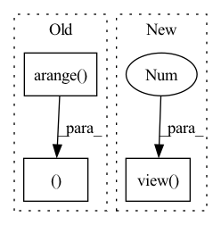

Pattern ID :2794

Before Change
) // for numerical stability
with torch.no_grad():
origin_cos = cos_theta.clone()
target_logit = cos_theta[torch.arange(0, embbedings.size(0)), label].view(-1, 1)
sin_theta = torch.sqrt(1.0 - torch.pow(target_logit, 2))
cos_theta_m = (
After Change
if is_half:
cos_theta_m = cos_theta_m.half()
index = torch.zeros_like(cos_theta)
index.scatter_(1, label.data.view(-1, 1), 1)
index = index.byte().bool()
output = cos_theta * 1.0
output[index] = cos_theta_m[index]
In pattern: SUPERPATTERN
Frequency: 3
Non-data size: 3
Instances
Fragment ID: 15578095
Project Name: cavalleria/cavaface
Commit Name: 98a21048f5dce435a6639a288dafc4c6be61be05
Time: 2021-08-25
Author: 605370459@qq.com
File Name: head/metrics.py
M Class Name: ArcFace
N Class Name: ArcFace
M Method Name: forward(3)
N Method Name: forward(3)
M Parent Class: nn.Module
N Parent Class: nn.Module
M File Name: head/metrics.py
N File Name: head/metrics.py
M Start Line: 81
M End Line: 103
N Start Line: 67
N End Line: 86
'>
Before Change
device = x.device
half_dim = self.dim // 2
emb = math.log(10000) / (half_dim - 1)
emb = torch.exp(torch.arange(half_dim, device=device) * -emb)
emb = x[:, None] * emb[None, :]
emb = torch.cat((emb.sin(), emb.cos()), dim=-1)
return emb
After Change
def forward(self, input):
shape = input.shape
sinusoid_in = torch.ger(input.view(-1).float(), self.inv_freq)
pos_emb = torch.cat([sinusoid_in.sin(), sinusoid_in.cos()], dim=-1)
pos_emb = pos_emb.view(*shape, self.dim)
return pos_emb
'>
Fragment ID: 15578094
Project Name: janspiry/image-super-resolution-via-iterative-refinement
Commit Name: 519d366759ea639a68262c20661fa8af7e85cfc6
Time: 2021-07-30
Author: jiangliangwei@tetras.com
File Name: model/unet.py
M Class Name: SinusoidalPosEmb
N Class Name: TimeEmbedding
M Method Name: forward(2)
N Method Name: forward(2)
M Parent Class: nn.Module
N Parent Class: nn.Module
M File Name: model/unet.py
N File Name: model/unet.py
M Start Line: 37
M End Line: 42
N Start Line: 32
N End Line: 36
'>
Before Change
device = x.device
half_dim = self.dim // 2
emb = math.log(10000) / (half_dim - 1)
emb = torch.exp(torch.arange(half_dim, device=device) * -emb)
emb = x[:, None] * emb[None, :]
emb = torch.cat((emb.sin(), emb.cos()), dim=-1)
return emb
After Change
def forward(self, input):
shape = input.shape
sinusoid_in = torch.ger(input.view(-1).float(), self.inv_freq)
pos_emb = torch.cat([sinusoid_in.sin(), sinusoid_in.cos()], dim=-1)
pos_emb = pos_emb.view(*shape, self.dim)
return pos_emb
'>
Fragment ID: 15578098
Project Name: janspiry/image-super-resolution-via-iterative-refinement
Commit Name: a843610e321ec7e1898e97dd495f8991182b8b87
Time: 2021-07-30
Author: lw_jiang@foxmail.com
File Name: model/unet.py
M Class Name: SinusoidalPosEmb
N Class Name: TimeEmbedding
M Method Name: forward(2)
N Method Name: forward(2)
M Parent Class: nn.Module
N Parent Class: nn.Module
M File Name: model/unet.py
N File Name: model/unet.py
M Start Line: 37
M End Line: 42
N Start Line: 32
N End Line: 36